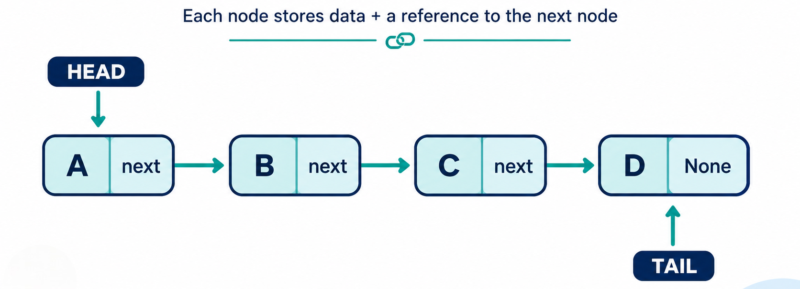

Singly Linked List Data Structure in Python – Complete Tutorial with Examples
Learn how a singly linked list works in Python using simple explanations and practical code examples. A singly linked list is a linear data structure made up of nodes, where each node stores a value and a reference to the next node. Unlike arrays, linked lists do not require elements to be stored next to each other in memory, making them useful for learning pointer-based data structures.

Designed for both beginners and developers preparing for technical interviews, this tutorial covers:
- Core Concepts & Structure: Understand how singly linked lists work, including nodes, the head pointer, the next reference, and one-way traversal.
- Implementations: Build a singly linked list from scratch using a custom
Nodeclass, then improve it with atailpointer and recursive methods. - Essential Operations: Learn how to insert, delete, search, update, traverse, and reverse nodes while understanding the time complexity of each operation.
- Real-World Applications: Explore practical examples such as forward-only playlists, hash map collision handling, one-way action logs, and adjacency lists.
- Interview Prep & Patterns: Practice common linked-list problems, including reversing a list, finding the middle node, detecting cycles, removing duplicates, and adding numbers represented by linked lists.
Table of Contents
Introduction
Linked List Definition
A linked list is a linear data structure made up of separate elements called nodes. Each node stores two things:
- Data – the value or information.
- Link – a reference or pointer to another node.
Unlike an array, linked-list nodes do not need to be stored next to each other in memory. The links maintain the order between nodes. The first node is called the head, and the last node usually points to None in a standard linear list.
HEAD
↓
[ A | next ] → [ B | next ] → [ C | None ]
In this example, A, B, and C are nodes. Each node points to the next node, allowing the program to traverse the list from the head to the end.
Types of Linked Lists
- Singly Linked List
- Doubly Linked List
nextpoints to the next node.prevpoints to the previous node.- Circular Linked List
- Circular Doubly Linked List
- Each node has
nextandprevreferences. - The last node points to the first node.
- The first node points back to the last node.
A singly linked list is the simplest type. Each node contains data and one next reference that points to the following node.
A → B → C → None
It supports forward traversal only. It uses less memory than a doubly linked list, but moving backward through the list is not possible
A doubly linked list stores two references in each node:
None ← A ⇄ B ⇄ C → None
This allows traversal in both forward and backward directions. The extra prev reference makes insertion and deletion more flexible, but it also requires additional memory.
In a circular linked list, the last node points back to the first node instead of pointing to None.
A → B → C
↑ ↓
└───────┘
This creates a continuous loop. Circular lists can be singly linked or doubly linked and are useful for applications that repeatedly cycle through items, such as round-robin scheduling.
A circular doubly linked list combines both features:
A ⇄ B ⇄ C
↑ ↓
└───────┘
It supports movement in both directions without reaching None, but it requires more memory and careful pointer management
Quick Comparison
| Type | Direction | Last node points to | Extra memory |
|---|---|---|---|
| Singly linked list | Forward | None | Low |
| Doubly linked list | Forward and backward | None | Medium |
| Circular linked list | Forward in a loop | Head | Low to medium |
| Circular doubly linked list | Both directions in a loop | Head | High |
The best type depends on the problem. Use a singly linked list when forward-only traversal is enough, a doubly linked list when backward movement is needed, and a circular linked list when the data must be processed repeatedly in a loop.
1. What Is Singly Linked List?
A singly linked list is a linear data structure made up of connected elements called nodes. Each node stores a value and a reference to the next node in the sequence. Because the connection goes in only one direction, you can move forward through the list but cannot move backward directly.
Real-World Analogy: Think of it like a train with carriages connected in a single direction. Each carriage knows which carriage comes next, but it does not know which one came before it. If you want to reach a node further along the list, you must start at the beginning and follow each connection one by one.

In this example, HEAD points to the first node, while TAIL represents the final node. The last node stores None in its next field because there is no following node.
Each node contains two essential parts:
value– the actual data stored in the node.next– a reference to the next node, orNonewhen it is the last node.
Real systems/software that use singly linked lists internally:
- Music and video playlists: Moving from the current track to the next track.
- One-way action logs: Recording and replaying events in the order they occurred.
- Hash map collision handling: Storing multiple entries in the same bucket through chaining.
- Polynomial representation: Connecting individual terms in symbolic mathematics.
- Graph adjacency lists: Representing connected nodes in graph structures.
- Blockchain concepts: Linking one block to the next block in a sequence
In this tutorial, you'll learn how to create a singly linked list in Python, connect nodes, perform common operations, understand time complexity, and solve practical linked-list problems.
2. Core Operations & Complexity
Before you write a single line of code, it helps to know exactly what a singly linked list can do - and how fast each action really is. In this section, we break down the core linked list operations: insert, delete, search / traversal, update, and reverse, along with their time complexities and underlying mechanics.
| Operation | Description | Time Complexity | Why |
|---|---|---|---|
| Insert at head | Add a new node at the front | O(1) | Just point the new node at the old head, then update head |
| Insert at tail | Add a new node at the end | O(n)* | Must walk all the way to the end first - O(1) only with a separate tail pointer |
| Insert at middle | Add a node after a known position | O(n) | Must walk to that position first, but the actual insert is O(1) once there |
| Delete at head | Remove the first node | O(1) | Just move the head pointer to head.next |
| Delete at tail | Remove the last node | O(n) | Must walk to the second-to-last node, since there's no prev pointer to jump back with |
| Delete at middle | Remove a node at a known position | O(n) | Must walk there first, but the actual unlink is O(1) once there |
| Search / Traversal | Find if/where a value exists | O(n) | No shortcuts - every node must be checked in order |
| Update a value | Change the value at a known position | O(n) | Must walk to that position first; the update itself is O(1) |
| Reverse the list | Flip the direction of every pointer | O(n) | Must visit and re-point every single node exactly once |
Important: This is the main trade-off of a singly linked list vs. an array: inserting at the FRONT is O(1) here (vs O(n) for an array, where everything shifts), but appending at the END is the opposite unless you plan ahead with a tail pointer.
3. Core Operations Explained (With Examples)
The following sections explain each singly linked list operation using short, focused code examples. Every snippet demonstrates one task at a time, making it easier to understand how the node connections change.
After covering the individual operations, we'll bring them together in a complete SinglyLinkedList class in Section 4. This step-by-step approach helps you understand the pointer logic before working with the full implementation.
We'll use this simple Node class throughout:
Python
class Node:
def __init__(self, value):
self.value = value
self.next = None
3.1 Insertion at Head
How it works, step by step:
- Create a new node with the given value.
- Point the new node's
nextat the current head. - Update
headto be the new node.
Before:
head → [ B ] → [ C ] → None
After inserting A at head:
head → [ A ] → [ B ] → [ C ] → None
↑
new_node.next now points to the OLD head (B)
Isolated code:
def insert_at_head(head, value):
new_node = Node(value)
new_node.next = head # step 2: point at the old head
return new_node # step 3: this IS the new head now
head = Node("B")
head.next = Node("C")
head = insert_at_head(head, "A")
# head is now A -> B -> C
Trace Table
| Step | What happens |
|---|---|
new_node = Node("A") |
new node A created, A.next = None |
new_node.next = head |
A.next now points at B (the old head) |
return new_node |
function hands back A |
head = insert_at_head(...) |
caller's head variable now points at A |
| Step | Action | What happens | head after |
|---|---|---|---|
| 1 | head = Node("B") |
creates node B | points to B |
| 2 | head.next = Node("C") |
C created, linked after B | still points to B (B → C) |
| 3 | insert_at_head(head, "A") called |
new node A created, A.next set to old head (B) | function returns A, but head variable itself hasn't changed yet |
| 4 | head = ... (reassignment) |
caller saves the returned node | points to A (A → B → C) |
Summary: The new node grabs a reference to the current head first, so it can point to it, and then it becomes the new head itself.
3.2 Insertion at Tail
How it works, step by step:
- Create a new node.
- Walk from the head until you find the current last node (the one whose
nextis None). - Point that last node's
nextat the new node.
Before:
head → [ A ] → [ B ] → None
After inserting C at tail:
head → [ A ] → [ B ] → [ C ] → None
↑
B.next now points to the new node C, instead of None
Isolated code:
def insert_at_tail(head, value):
new_node = Node(value)
if head is None:
return new_node # list was empty - new node becomes the whole list
current = head
while current.next is not None: # step 2: walk to the last node
current = current.next
current.next = new_node # step 3: attach the new node
return head # head hasn't changed, still returning it for consistency
head = Node("A")
head.next = Node("B")
# list is: A -> B
head = insert_at_tail(head, "C")
# head is now A -> B -> C
| Step | current | What happens |
|---|---|---|
current = head |
A |
start walking from the head |
current.next is not None? |
A.next = B, yes |
move forward |
current = current.next |
B |
now standing at B |
current.next is not None? |
B.next = None, no |
stop - B is the last node |
current.next = new_node |
- | B.next now points at C |
return head |
- | still A, unchanged |
Summary: Walk forward through the list until you find the node with nothing after it, then attach the new node there, and if the list was empty to begin with, the new node just becomes the list.
3.3 Insertion at the Middle (After a Known Node)
How it works, step by step:
- Create a new node.
- Point the new node's
nextat whatever the known node was pointing to. - Point the known node's
nextat the new node.
Before (inserting after B):
head → [ A ] → [ B ] → [ D ] → None
After inserting C after B:
head → [ A ] → [ B ] → [ C ] → [ D ] → None
↑ ↑
B.next now C.next points to
points to C what B used to point to (D)
Isolated code:
def insert_after_node(known_node, value):
new_node = Node(value)
new_node.next = known_node.next # step 2: MUST happen first
known_node.next = new_node # step 3: now safe to overwrite
head = Node("A")
head.next = Node("B")
head.next.next = Node("D")
node_b = head.next # we already have a reference to B
insert_after_node(node_b, "C")
# head is now A -> B -> C -> D
| Step | What happens |
|---|---|
new_node = Node("C") |
new node C created, C.next = None |
new_node.next = known_node.next |
C.next now points at D (what B used to point at) |
known_node.next = new_node |
B.next now points at C instead of D |
Summary: The new node first grabs a copy of whatever the known node was pointing to, and only after that's safely saved does the known node get rewired to point at the new node instead.
3.4 Insertion at the Middle (Before a Known Value)
How it works, step by step:
- Create a new node.
- Walk the list, but check
current.next.value(notcurrent.value) against the target, you're looking for the node right before the one you want to insert in front of. - Point the new node's
nextatcurrent.next(the target node). - Point
current.nextat the new node.
Before (inserting X before C):
head → [ A ] → [ B ] → [ C ] → None
After inserting C after B:
head → [ A ] → [ B ] → [ X ] → [ C ] → None
↑ ↑
B.next now X.next points to
points to X what B used to point to (C)
Isolated code:
def insert_before_node(head, target_value, new_value):
new_node = Node(new_value)
# Special case: target is the head itself - no predecessor to search for
if head is not None and head.value == target_value:
new_node.next = head
return new_node # new_node is the new head
current = head
while current is not None and current.next is not None:
if current.next.value == target_value: # peek AHEAD, not at current itself
new_node.next = current.next # step 3: MUST happen first
current.next = new_node # step 4: now safe to overwrite
return head
current = current.next
return head # target not found - list unchanged
head = Node("A")
head.next = Node("B")
head.next.next = Node("C")
head = insert_before_node(head, "C", "X")
# head is now A -> B -> X -> C
| Step | current | Check | What happens |
|---|---|---|---|
| Special case check | - | head.value is "A", not "C" |
skip, not the head |
current = head |
A |
- | start walking |
| loop check | A |
A.next.value is "B", not "C" |
no match, move on |
current = current.next |
B |
- | now standing at B |
| loop check | B |
B.next.value is "C" - match! |
found it |
new_node.next = current.next |
- | - | X.next now points at C |
current.next = new_node |
- | - | B.next now points at X instead of C |
return head |
- | - | still A, unchanged |
Summary: Since you can't look backward in a singly linked list, you have to walk one step ahead of yourself, checking each node's neighbor instead of itself, so that when you find the target, you're already standing at the node that needs to be rewired.
3.5 Deletion at Head
How it works, step by step:
- Save a reference to the current head (optional, if you need the value).
- Move
headto point athead.next. - The old head node is now unreferenced and will be cleaned up automatically by Python.
Before:
head → [ A ] → [ B ] → [ C ] → None
After deleting the head:
head → [ B ] → [ C ] → None
(A is no longer referenced by anything, so Python discards it)
Isolated code:
def delete_head(head):
if head is None:
return None
return head.next # step 2: this single line does the deletion
head = Node("A")
head.next = Node("B")
head.next.next = Node("C")
head = delete_head(head)
# head is now B -> C
| Step | What happens |
|---|---|
head is None? |
No, skip the empty check |
return head.next |
returns B (what A was pointing to) |
head = delete_head(head) |
caller's head variable now points at B |
Summary: The new head is simply whatever the old head was pointing to - no rewiring needed, since nothing else in the list ever pointed backward at the head in the first place.
3.6 Deletion at Tail
How it works, step by step:
- Walk from the head until you reach the SECOND-to-last node (the one just before the tail).
- Set that node's
nexttoNone, cutting off the last node.
Before:
head → [ A ] → [ B ] → [ C ] → None
After deleting the tail (C):
head → [ A ] → [ B ] → None
↑
B.next changed from C to None
Isolated code:
def delete_tail(head):
if head is None or head.next is None:
return None # list is empty or has only one node
current = head
while current.next.next is not None: # stop at the SECOND-to-last node
current = current.next
current.next = None # cut off the last node
return head
head = Node("A")
head.next = Node("B")
head.next.next = Node("C")
head = delete_tail(head)
# head is now A -> B
| Step | current | Check | What happens |
|---|---|---|---|
| empty/single-node check | - | head is not None, head.next is not None |
skip, list has 2+ nodes |
current = head |
A | - | start walking |
| loop check | A | A.next.next - A.next is B, B.next is C (not None) |
keep walking |
current = current.next |
B | - | now standing at B |
| loop check | B | B.next.next - B.next is C, C.next is None |
stop - B is second-to-last |
current.next = None |
- | - | B.next set to None, cutting off C |
return head |
- | - | still A, unchanged |
Summary: Walk one step ahead of yourself until you find the second-to-last node, then cut its connection to the final node, leaving that final node unreachable and effectively removed.
3.7 Deletion at the Middle (Given the Previous Node)
How it works, step by step:
- You need a reference to the node BEFORE the one you want to delete.
- Point that previous node's
nextpast the node being deleted (skip over it).
Before (deleting B, given a reference to A):
head → [ A ] → [ B ] → [ C ] → None
After:
head → [ A ] → [ C ] → None
↑
A.next now skips B entirely, pointing straight to C
Isolated code:
def delete_after_node(previous_node):
if previous_node is None or previous_node.next is None:
return
previous_node.next = previous_node.next.next # skip over the target node
head = Node("A")
head.next = Node("B")
head.next.next = Node("C")
delete_after_node(head) # deletes B, since head (A) is the previous node
# head is now A -> C
| Step | What happens |
|---|---|
previous_node is None? |
No, previous_node is A |
previous_node.next is None? |
No, A.next is B |
previous_node.next = previous_node.next.next |
A.next was B; B.next is C - so A.next is now set to C |
Summary: Point the given node directly at whatever its neighbor was pointing to, completely skipping over, and effectively deleting, the node in between.
3.8 Search / Traversal
How it works, step by step:
- Start at the head.
- Check the current node's value against the target.
- If it matches, return success. If not, move to
current.nextand repeat. - If you reach
None, the value isn't in the list.
Trace for searching "C" in A → B → C → None:
Step 1: current = A → A.value == "C"? No → move on
Step 2: current = B → B.value == "C"? No → move on
Step 3: current = C → C.value == "C"? Yes → FOUND
Isolated code:
def search(head, target):
current = head
while current is not None:
if current.value == target:
return True # found it
current = current.next
return False # walked off the end without finding it
head = Node("A")
head.next = Node("B")
head.next.next = Node("C")
print(search(head, "C")) # True
print(search(head, "Z")) # False
| Step | current | current.value == "C"? |
Action |
|---|---|---|---|
| 1 | A | No | move to next |
| 2 | B | No | move to next |
| 3 | C | Yes | return True immediately |
Summary: Walk through the list one node at a time, checking each value as you go, return True the moment you find a match, or False if you reach the end without finding one.
3.9 Update a Value
How it works, step by step:
- Traverse to the node at the target position (or matching a target value).
- Overwrite its
valuefield directly.
Before (updating index 1 to "X"):
head → [ A ] → [ B ] → [ C ] → None
After:
head → [ A ] → [ X ] → [ C ] → None
Isolated code:
def update_at_index(head, index, new_value):
current = head
current_index = 0
while current is not None:
if current_index == index:
current.value = new_value # overwrite in place
return True
current = current.next
current_index += 1
return False # index out of range
head = Node("A")
head.next = Node("B")
head.next.next = Node("C")
update_at_index(head, 1, "X")
# head is now A -> X -> C
| Step | Code | What it means |
|---|---|---|
| 1 | current = head |
Start standing at the very first node. |
| 2 | current_index = 0 |
Keep a counter to track which position we're currently at - the head counts as position 0. |
| 3 | while current is not None: |
Keep going as long as we haven't fallen off the end of the list. |
| 4 | if current_index == index: |
Check: is this the exact position we're looking for? |
| 5 | current.value = new_value |
If yes - don't remove or replace the node, just overwrite the value stored inside it. |
| 6 | return True |
Report back that the update succeeded, and stop immediately. |
| 7 | current = current.next |
If this wasn't the right position, move forward to the next node. |
| 8 | current_index += 1 |
Bump the counter up by 1, since we just moved one step forward. |
| 9 | return False |
If the loop finishes without ever matching the index, the position doesn't exist in this list - report failure. |
Summary: Walk forward counting positions as you go, and the moment your counter matches the target index, overwrite that node's value in place and stop, no rewiring needed at all.
3.1.1 Reverse the List
How it works, step by step:
- Keep three references:
previous(starts asNone),current(starts athead), and a temporarynext_node. - For each node: save
current.nextinnext_nodeBEFORE overwriting it, flipcurrent.nextto point atprevious, then shiftpreviousandcurrentforward by one. - When
currentbecomesNone,previousis the new head.
Trace for reversing A → B → C:
Start: previous=None, current=A
Step 1: A.next flips to None (points at previous)
previous=A, current=B
Step 2: B.next flips to A (points at previous)
previous=B, current=C
Step 3: C.next flips to B (points at previous)
previous=C, current=None → loop ends
Result: C -> B -> A -> None (previous = new head = C)
Isolated code:
def reverse(head):
previous = None
current = head
while current is not None:
next_node = current.next # save before overwriting
current.next = previous # flip the pointer
previous = current
current = next_node
return previous # new head
head = Node("A")
head.next = Node("B")
head.next.next = Node("C")
head = reverse(head)
# head is now C -> B -> A
| Step | Code | What it does |
|---|---|---|
| 1 | previous = None |
Start with "nothing behind us yet" - this will eventually become the new head. |
| 2 | current = head |
Start walking from the very first node. |
| 3 | while current is not None: |
Keep going until we've walked off the end of the list. |
| 4 | next_node = current.next |
Save where current was originally pointing, before we change anything - otherwise we'd lose track of the rest of the list. |
| 5 | current.next = previous |
Flip the arrow - instead of pointing forward, this node now points backward, at whatever came before it. |
| 6 | previous = current |
Move previous forward - this node has now been fully flipped, so it becomes the "previous" for the next one. |
| 7 | current = next_node |
Move current forward too, using the value we saved in step 4 - continuing the walk. |
| 8 | return previous |
Once the loop ends, previous is sitting on the very last node we flipped - which is now the new head of the reversed list. |
Summary: Walk through the list one node at a time, saving the next node before flipping each one's arrow backward, until every connection points the opposite direction, then the last node visited becomes the new head.
4. Implementations
Now that you understand the basic operations of a singly linked list, it’s time to combine them into complete Python implementations. This section begins with a custom Node class and a linked-list class that supports common operations such as adding, deleting, searching, and displaying values.
Method A: From Scratch with a Custom Node Class (the core technique)
Python
class Node:
def __init__(self, value):
self.value = value
self.next = None
class SinglyLinkedList:
def __init__(self):
self.head = None
self._size = 0
def prepend(self, value):
new_node = Node(value)
new_node.next = self.head
self.head = new_node
self._size += 1
def append(self, value):
new_node = Node(value)
if self.head is None:
self.head = new_node
self._size += 1
return
current = self.head
while current.next is not None:
current = current.next
current.next = new_node
self._size += 1
def delete(self, value):
if self.head is None:
return False
if self.head.value == value:
self.head = self.head.next
self._size -= 1
return True
current = self.head
while current.next is not None:
if current.next.value == value:
current.next = current.next.next
self._size -= 1
return True
current = current.next
return False
def search(self, value):
current = self.head
while current is not None:
if current.value == value:
return True
current = current.next
return False
def to_list(self):
result = []
current = self.head
while current is not None:
result.append(current.value)
current = current.next
return result
def size(self):
return self._size
sll = SinglyLinkedList()
sll.append(1)
sll.append(2)
sll.append(3)
sll.prepend(0)
print(sll.to_list()) # [0, 1, 2, 3]
print(sll.search(2)) # True
sll.delete(2)
print(sll.to_list()) # [0, 1, 3]
Step-by-Step Explanation
What This Program Does
This program builds a singly linked list and provides methods to add, remove, search, display, and count values. Think of it as a chain of connected boxes, where each box stores a value and points to the next box.
Creating a Node
class Node:
def __init__(self, value):
self.value = value
self.next = NoneA Node is one item in the linked list.
valuestores the actual data.nextstores a reference to the next node.next = Nonemeans the node is not connected to another node yet.
For example:
node = Node(10)This creates:
[ 10 | None ]Creating the List
class SinglyLinkedList:
def __init__(self):
self.head = None
self._size = 0The SinglyLinkedList class manages the nodes.
headpoints to the first node._sizestores the number of nodes.- An empty list starts with no head and a size of zero.
head → NoneAdding to the Front
def prepend(self, value):
new_node = Node(value)
new_node.next = self.head
self.head = new_node
self._size += 1The prepend() method adds a node at the beginning.
new_node = Node(value)A new node is created with the given value.
new_node.next = self.headThe new node points to the current first node. This keeps the existing list connected.
self.head = new_nodeThe new node becomes the new first node.
self._size += 1The list count increases by one.
For example:
Before:
head → [1] → [2] → None
After prepend(0):
head → [0] → [1] → [2] → NoneAdding to the End
def append(self, value):
new_node = Node(value)The append() method creates a node that will be placed at the end.
if self.head is None:
self.head = new_node
self._size += 1
returnIf the list is empty, the new node becomes the head and the method finishes.
For a list that already contains nodes:
current = self.headThe current variable starts at the first node.
while current.next is not None:
current = current.nextThe loop moves from one node to the next until it reaches the final node. The final node is the one whose next value is None.
current.next = new_node
self._size += 1The new node is connected after the last node, and the size is updated.
Deleting a Value
def delete(self, value):
if self.head is None:
return FalseIf the list is empty, there is nothing to delete. The method returns False.
Deleting the First Node
if self.head.value == value:
self.head = self.head.next
self._size -= 1
return TrueIf the value is stored in the head node, the head moves to the next node.
Before:
head → [1] → [2] → [3] → None
After deleting 1:
head → [2] → [3] → NoneDeleting a Middle or Last Node
current = self.head
while current.next is not None:
if current.next.value == value:
current.next = current.next.next
self._size -= 1
return True
current = current.nextThis code checks the node after current. That is important because the previous node’s link must be changed when removing a node.
For example, to remove 2:
Before:
[1] → [2] → [3] → NoneThis statement:
current.next = current.next.nextmakes 1 point directly to 3:
After:
[1] → [3] → NoneThe node containing 2 is skipped.
If the value is not found, the method reaches:
return FalseSearching for a Value
def search(self, value):
current = self.head
while current is not None:
if current.value == value:
return True
current = current.next
return FalseThe search() method checks each node from the beginning.
- If it finds the requested value, it returns
True. - If it reaches the end without finding it, it returns
False.
For example:
[0] → [1] → [2] → [3] → None
↑
FoundConverting the List
def to_list(self):
result = []
current = self.head
while current is not None:
result.append(current.value)
current = current.next
return resultThe to_list() method copies the linked-list values into a regular Python list.
It starts with an empty list, reads each node, adds its value to result, and then moves forward.
Linked list:
[0] → [1] → [2] → [3] → None
Python list:
[0, 1, 2, 3]Getting the Size
def size(self):
return self._sizeThis method returns the number of nodes currently in the linked list.
The value of _size is increased when a node is added and decreased when a node is deleted.
Example Trace
sll = SinglyLinkedList()| Step | Operation | Linked-list state | Size |
|---|---|---|---|
| 1 | Create list | head → None |
0 |
| 2 | append(1) |
1 → None |
1 |
| 3 | append(2) |
1 → 2 → None |
2 |
| 4 | append(3) |
1 → 2 → 3 → None |
3 |
| 5 | prepend(0) |
0 → 1 → 2 → 3 → None |
4 |
| 6 | search(2) |
Value 2 is found |
4 |
| 7 | delete(2) |
0 → 1 → 3 → None |
3 |
Program Output
print(sll.to_list())Output:
[0, 1, 2, 3]The values appear in their linked-list order.
print(sll.search(2))Output:
TrueThe value 2 exists in the list.
sll.delete(2)The node containing 2 is removed:
Before:
head → [0] → [1] → [2] → [3] → None
After:
head → [0] → [1] → [3] → Noneprint(sll.to_list())Final output:
[0, 1, 3]Important Details
When adding a node at the front, connect it to the old head before updating head:
new_node.next = self.head
self.head = new_nodeWhen deleting a node in the middle, update the previous node’s next reference:
current.next = current.next.nextThe methods also handle an empty list safely. Appending to an empty list creates the first node, while searching or deleting returns an appropriate result when no nodes exist.
Summary: This program creates and manages a singly linked list by connecting nodes and providing simple methods to add, delete, search, display, and count values.
Method 2: Adding a tail Pointer (Optimized Append)
The basic version above is slow (O(n)) when appending, because it walks the whole list every time. Fix this by remembering where the tail already is.
Python
class OptimizedSinglyLinkedList:
def __init__(self):
self.head = None
self.tail = None # NEW: keep a direct reference to the last node
self._size = 0
def append(self, value):
"""Add to the end - now O(1) because we skip the walk entirely."""
new_node = Node(value)
if self.head is None:
self.head = new_node
self.tail = new_node
else:
self.tail.next = new_node
self.tail = new_node
self._size += 1
def prepend(self, value):
new_node = Node(value)
new_node.next = self.head
self.head = new_node
if self.tail is None:
self.tail = new_node
self._size += 1
def to_list(self):
result = []
current = self.head
while current is not None:
result.append(current.value)
current = current.next
return result
osll = OptimizedSinglyLinkedList()
osll.append("A") # O(1) now, instead of O(n)
osll.append("B")
osll.append("C")
print(osll.to_list()) # ['A', 'B', 'C']
Step-by-Step Explanation
What This Program Does
This program creates an optimized singly linked list that keeps references to both the first and last nodes. Think of it like a queue of people where you know who is at the front and who is standing at the end, so adding someone to the back is quick.
Creating the List
class OptimizedSinglyLinkedList:
def __init__(self):
self.head = None
self.tail = None
self._size = 0When the list is created:
headpoints to the first node.tailpoints to the last node._sizestores the number of nodes.
Both head and tail are None because the list is empty.
head → None
tail → None
size = 0Adding to the End
def append(self, value):
new_node = Node(value)The append() method creates a new node with the supplied value.
Handling an Empty List
if self.head is None:
self.head = new_node
self.tail = new_nodeIf the list is empty, the new node is both the first and last node. That is why both head and tail point to the same node.
head ─┐
↓
[ A | None ]
↑
tail ─┘Adding to a Non-Empty List
else:
self.tail.next = new_node
self.tail = new_nodeWhen the list already contains nodes:
- The current
tailis connected to the new node. tailis moved forward so it points to the new last node.
For example:
Before:
head → [A] → [B] → None
↑
tail
After adding C:
head → [A] → [B] → [C] → None
↑
tailself._size += 1The node count increases after the new node is connected.
Adding to the Front
def prepend(self, value):
new_node = Node(value)
new_node.next = self.head
self.head = new_nodeThe prepend() method adds a new node at the beginning.
First, the new node points to the current head. Then, the new node becomes the new head.
Before:
head → [B] → [C] → None
After prepend(A):
head → [A] → [B] → [C] → NoneThe existing nodes stay connected because the new node points to the old head.
Updating the Tail for an Empty List
if self.tail is None:
self.tail = new_nodeIf the list was empty, the new node is both the head and the tail. This check is needed because adding the first node must update both references.
self._size += 1The list count increases by one.
Converting the List
def to_list(self):
result = []
current = self.headThe to_list() method creates an ordinary Python list. It starts at the head and uses current to move through the linked nodes.
while current is not None:
result.append(current.value)
current = current.nextFor every node:
- Its value is added to
result. currentmoves to the next node.
The loop ends when current becomes None.
return resultFinally, the collected values are returned as a regular Python list.
Running the Example
osll = OptimizedSinglyLinkedList()The list starts empty:
head → None
tail → None
size = 0Add A
osll.append("A")Because the list is empty, A becomes both the head and tail:
head ─┐
↓
[A] → None
↑
tail ─┘Add B
osll.append("B")The current tail, A, points to B. Then tail moves to B.
head → [A] → [B] → None
↑
tailAdd C
osll.append("C")The current tail, B, points to C, and tail moves to C.
head → [A] → [B] → [C] → None
↑
tailConvert the List
print(osll.to_list())The method visits each node from head to None and returns:
['A', 'B', 'C']Example Trace
| Step | Operation | Head | Tail | List contents | Size |
|---|---|---|---|---|---|
| 1 | Create list | None | None | Empty | 0 |
| 2 | append("A") |
A | A | A → None |
1 |
| 3 | append("B") |
A | B | A → B → None |
2 |
| 4 | append("C") |
A | C | A → B → C → None |
3 |
| 5 | to_list() |
A | C | ['A', 'B', 'C'] |
3 |
Important Details
The tail reference is the main improvement in this implementation. Without it, the program would need to start at head and walk through every node before adding a value at the end.
When the first node is added, both references must be updated:
self.head = new_node
self.tail = new_nodeWhen a node is added at the front, the tail usually stays unchanged. It only needs updating when the list was empty:
if self.tail is None:
self.tail = new_nodeFinal Output
print(osll.to_list())Output:
['A', 'B', 'C']Summary: This program builds a singly linked list with both head and tail references, allowing values to be added efficiently at either end while keeping track of the list size.
Method 3: Building it Recursively
Python
def recursive_length(node):
"""Count nodes recursively instead of using a loop."""
if node is None:
return 0
return 1 + recursive_length(node.next)
def recursive_search(node, target):
"""Search recursively instead of using a while loop."""
if node is None:
return False
if node.value == target:
return True
return recursive_search(node.next, target)
def recursive_print(node):
"""Print all values recursively."""
if node is None:
return
print(node.value, end=" ")
recursive_print(node.next)
head = Node(1)
head.next = Node(2)
head.next.next = Node(3)
print(recursive_length(head)) # 3
print(recursive_search(head, 2)) # True
recursive_print(head) # 1 2 3
Step-by-Step Explanation
What This Program Does
This program uses recursion to count, search, and print the values in a singly linked list. Instead of using a loop, each function handles the current node and then asks itself to process the next node.
The linked list works like a one-way chain:
[1] → [2] → [3] → NoneCreating the Recursive Functions
Counting the Nodes
def recursive_length(node):
if node is None:
return 0
return 1 + recursive_length(node.next)The function counts how many nodes are in the list.
if node is None:
return 0This is the stopping condition. When the function reaches the end of the list, there is no node left to count, so it returns 0.
return 1 + recursive_length(node.next)For a valid node:
- Count the current node as 1.
- Call the same function for the next node.
- Add the results together.
For the list 1 → 2 → 3, the calls work like this:
recursive_length(1)
= 1 + recursive_length(2)
= 1 + 1 + recursive_length(3)
= 1 + 1 + 1 + recursive_length(None)
= 1 + 1 + 1 + 0
= 3Searching for a Value
def recursive_search(node, target):
if node is None:
return False
if node.value == target:
return True
return recursive_search(node.next, target)This function checks whether a target value exists in the list.
if node is None:
return FalseIf the function reaches the end without finding the target, it returns False.
if node.value == target:
return TrueIf the current node contains the target value, the search stops immediately and returns True.
return recursive_search(node.next, target)If the current value does not match, the function calls itself with the next node.
For example, searching for 2 works like this:
Check 1 → not a match
Check 2 → match found
Return TruePrinting the Values
def recursive_print(node):
if node is None:
return
print(node.value, end=" ")
recursive_print(node.next)This function prints each node’s value in order.
if node is None:
returnWhen the end of the list is reached, the function stops.
print(node.value, end=" ")The current value is printed without moving to a new line.
recursive_print(node.next)The function then continues with the next node.
For the list:
[1] → [2] → [3] → Nonethe output is:
1 2 3Building the List
head = Node(1)
head.next = Node(2)
head.next.next = Node(3)These statements create three nodes and connect them together.
head
↓
[1] → [2] → [3] → Noneheadpoints to the node containing 1.- The first node points to 2.
- The second node points to 3.
- The third node points to
None, marking the end.
Running the Functions
Count the Nodes
print(recursive_length(head))The function visits all three nodes and returns:
3Search for 2
print(recursive_search(head, 2))The function checks 1, then 2, finds the match, and returns:
TruePrint the List
recursive_print(head)The function prints:
1 2 3Example Trace
| Step | Function call | Current node | Result or action |
|---|---|---|---|
| 1 | recursive_length(head) |
1 | Count 1, move to 2 |
| 2 | recursive_length(node.next) |
2 | Count 1, move to 3 |
| 3 | recursive_length(node.next) |
3 | Count 1, move to None |
| 4 | recursive_length(None) |
None | Return 0 |
| 5 | Return to previous calls | - | Total count is 3 |
| 6 | recursive_search(head, 2) |
1 | No match, move to 2 |
| 7 | recursive_search(node.next, 2) |
2 | Match found, return True |
| 8 | recursive_print(head) |
1, 2, 3 | Print values in order |
Important Details
Every recursive function needs a stopping condition:
if node is None:
return ...Without this condition, the function would continue trying to access nodes after the end of the list.
The function also needs to move forward:
node.nextThis is what prevents it from processing the same node repeatedly.
Recursion makes the code short and closely matches the structure of a linked list, but each call uses Python’s call stack. For very long lists, a loop-based solution may be safer.
Complete Output
3
True
1 2 3Summary: These recursive functions move through a singly linked list one node at a time to count, search, and print its values.
5. Real-World Practical Problemss
Problem 1: "Next Song" Queue for a Music App
Use case: A simple playlist where you can only skip forward, never back - exactly matches what a singly linked list is built for.
Python
class SongNode:
def __init__(self, title):
self.title = title
self.next = None
class ForwardOnlyPlaylist:
def __init__(self):
self.head = None
self.current = None
def add_song(self, title):
new_song = SongNode(title)
if self.head is None:
self.head = new_song
self.current = new_song
return
last = self.head
while last.next:
last = last.next
last.next = new_song
def play_next(self):
if self.current and self.current.next:
self.current = self.current.next
print(f"Now playing: {self.current.title}")
playlist = ForwardOnlyPlaylist()
playlist.add_song("Track 1")
playlist.add_song("Track 2")
playlist.add_song("Track 3")
playlist.play_next() # Now playing: Track 2
playlist.play_next() # Now playing: Track 3
Step-by-Step Explanation
What This Program Does
This program creates a forward-only music playlist using a singly linked list. Each song points to the next song, so the playlist moves through tracks in order, like following a one-way road.
Creating a Song Node
class SongNode:
def __init__(self, title):
self.title = title
self.next = NoneSongNode represents one song in the playlist.
titlestores the song name.nextstores a reference to the next song.next = Nonemeans the song is not connected to another song yet.
For example:
song = SongNode("Track 1")creates:
[ Track 1 | None ]Creating the Playlist
class ForwardOnlyPlaylist:
def __init__(self):
self.head = None
self.current = NoneThe playlist uses two references:
headpoints to the first song.currentpoints to the song currently being played.
At the beginning, the playlist is empty:
head → None
current → NoneAdding a Song
def add_song(self, title):
new_song = SongNode(title)The add_song() method first creates a new song node with the supplied title.
Adding the First Song
if self.head is None:
self.head = new_song
self.current = new_song
returnIf the playlist is empty, the new song becomes both:
- The first song, referenced by
head. - The currently playing song, referenced by
current.
After adding the first track:
head ─┐
↓
[Track 1] → None
↑
current ┘Adding More Songs
last = self.head
while last.next:
last = last.nextWhen the playlist already contains songs, last starts at the first song. The loop follows each next reference until it reaches the final song.
last.next = new_songThe new song is connected after the last song.
For example:
Before:
[Track 1] → [Track 2] → None
After adding Track 3:
[Track 1] → [Track 2] → [Track 3] → NoneNotice that current does not change when a new song is added. The playlist continues playing from its current position.
Playing the Next Song
def play_next(self):
if self.current and self.current.next:
self.current = self.current.next
print(f"Now playing: {self.current.title}")This method moves the playlist forward by one song.
if self.current and self.current.next:The condition checks two things:
- There is a current song.
- A next song is available.
self.current = self.current.nextIf both conditions are true, current moves to the next song.
print(f"Now playing: {self.current.title}")The title of the current song is then printed.
Building the Playlist
playlist = ForwardOnlyPlaylist()This creates an empty playlist:
head → None
current → NoneAdd Track 1
playlist.add_song("Track 1")head ─┐
↓
[Track 1] → None
↑
current ┘Both head and current point to Track 1.
Add Track 2
playlist.add_song("Track 2")The new song is attached after Track 1:
head → [Track 1] → [Track 2] → None
↑
currentcurrent remains on Track 1.
Add Track 3
playlist.add_song("Track 3")The new song is attached after Track 2:
head → [Track 1] → [Track 2] → [Track 3] → None
↑
currentPlaying the Tracks
First Call
playlist.play_next()current moves from Track 1 to Track 2.
head → [Track 1] → [Track 2] → [Track 3] → None
↑
currentOutput:
Now playing: Track 2Second Call
playlist.play_next()current moves from Track 2 to Track 3.
head → [Track 1] → [Track 2] → [Track 3] → None
↑
currentOutput:
Now playing: Track 3Example Trace
| Step | Operation | Playlist structure | Current song |
|---|---|---|---|
| 1 | Create playlist | Empty | None |
| 2 | add_song("Track 1") |
Track 1 → None |
Track 1 |
| 3 | add_song("Track 2") |
Track 1 → Track 2 → None |
Track 1 |
| 4 | add_song("Track 3") |
Track 1 → Track 2 → Track 3 → None |
Track 1 |
| 5 | play_next() |
Same structure | Track 2 |
| 6 | play_next() |
Same structure | Track 3 |
Important Details
The playlist is forward-only because each song stores only a next reference. There is no previous reference, so the program cannot move directly back to an earlier track.
The first song must update both head and current:
self.head = new_song
self.current = new_songFor later songs, only the final link changes. The current song should remain where it is until play_next() is called.
When the current song is the last song, self.current.next is None, so the condition fails and the current song remains unchanged.
Program Output
Now playing: Track 2
Now playing: Track 3Summary: This program stores songs as linked nodes and moves through them one at a time by updating the current reference.
Problem 2: Grocery List Manager
Use case: This program models a simple grocery shopping list where each item is stored as a node in a singly linked list. Items can be added to the end of the list, removed when they are purchased, and displayed in their current order.
Python
class ItemNode:
def __init__(self, item_name):
self.item_name = item_name
self.next = None
class GroceryList:
def __init__(self):
self.head = None
self.tail = None
def add_item(self, item_name):
new_item = ItemNode(item_name)
if self.head is None:
self.head = new_item
self.tail = new_item
else:
self.tail.next = new_item
self.tail = new_item
def remove_item(self, item_name):
if self.head is None:
return False
if self.head.item_name == item_name:
self.head = self.head.next
if self.head is None:
self.tail = None
return True
current = self.head
while current.next is not None:
if current.next.item_name == item_name:
current.next = current.next.next
if current.next is None:
self.tail = current
return True
current = current.next
return False
def show_list(self):
current = self.head
if current is None:
print("Grocery list is empty!")
return
current_item = current
items = []
while current_item is not None:
items.append(current_item.item_name)
current_item = current_item.next
print("Grocery List:", " -> ".join(items))
shopping_list = GroceryList()
shopping_list.add_item("Milk")
shopping_list.add_item("Eggs")
shopping_list.add_item("Bread")
shopping_list.add_item("Cucumber")
shopping_list.show_list()
shopping_list.remove_item("Eggs")
shopping_list.show_list()
Step-by-Step Explanation
What This Program Does
This program creates a grocery list using a singly linked list. Each grocery item is stored in a node, and every node points to the next item, just like items connected in a shopping queue.
The program can add items, remove items, and display the current grocery list.
Creating an Item Node
class ItemNode:
def __init__(self, item_name):
self.item_name = item_name
self.next = NoneItemNode represents one grocery item.
item_namestores the item’s name.nextpoints to the next grocery item.next = Nonemeans the item is currently the last node.
For example:
item = ItemNode("Milk")creates:
[ Milk | None ]Creating the Grocery List
class GroceryList:
def __init__(self):
self.head = None
self.tail = NoneThe grocery list keeps two references:
headpoints to the first item.tailpoints to the last item.
At the beginning, the list is empty:
head → None
tail → NoneAdding an Item
def add_item(self, item_name):
new_item = ItemNode(item_name)The add_item() method first creates a new node for the grocery item.
Adding the First Item
if self.head is None:
self.head = new_item
self.tail = new_itemIf the list is empty, the new item becomes both the first and last item.
head ─┐
↓
[Milk] → None
↑
tail ─┘Adding More Items
else:
self.tail.next = new_item
self.tail = new_itemIf items already exist:
- The current last item points to the new item.
tailmoves to the new last item.
For example:
Before:
head → [Milk] → [Eggs] → None
↑
tail
After adding Bread:
head → [Milk] → [Eggs] → [Bread] → None
↑
tailUsing tail makes it easy to attach a new item to the end without starting again from the head.
Removing an Item
def remove_item(self, item_name):
if self.head is None:
return FalseIf the grocery list is empty, there is nothing to remove, so the method returns False.
Removing the First Item
if self.head.item_name == item_name:
self.head = self.head.nextIf the first item matches, the head moves to the next item.
if self.head is None:
self.tail = None
return TrueIf the removed item was the only item, the list is now empty. In that case, both head and tail must be set to None.
Before removing the only item:
head ─┐
↓
[Milk] → None
↑
tail ─┘After removing it:
head → None
tail → NoneRemoving a Middle or Last Item
current = self.head
while current.next is not None:
if current.next.item_name == item_name:
current.next = current.next.nextThe method checks the node after current. If that next item matches, the current node skips over it.
For example:
Before:
[Milk] → [Eggs] → [Bread] → None
After removing Eggs:
[Milk] → [Bread] → NoneThe link from Milk now points directly to Bread.
Updating the Tail
if current.next is None:
self.tail = current
return TrueIf the removed item was the last node, current.next becomes None. The code then updates tail so it points to the new final item.
If no matching item is found:
return FalseThe list remains unchanged.
Displaying the List
def show_list(self):
current = self.headThe show_list() method starts at the head.
if current is None:
print("Grocery list is empty!")
returnIf there are no items, it prints a message and stops.
current_item = current
items = []An empty Python list is created to collect the grocery names.
while current_item is not None:
items.append(current_item.item_name)
current_item = current_item.nextThe loop visits each node, saves its item name, and moves to the next node.
print("Grocery List:", " -> ".join(items))The item names are joined with arrows and printed as one readable line.
Running the Example
shopping_list = GroceryList()The list starts empty:
head → None
tail → NoneAdd the Items
shopping_list.add_item("Milk")
shopping_list.add_item("Eggs")
shopping_list.add_item("Bread")
shopping_list.add_item("Cucumber")The list becomes:
head → [Milk] → [Eggs] → [Bread] → [Cucumber] → None
↑
tailDisplay the List
shopping_list.show_list()Output:
Grocery List: Milk -> Eggs -> Bread -> CucumberRemove Eggs
shopping_list.remove_item("Eggs")The node containing Eggs is skipped:
Before:
head → [Milk] → [Eggs] → [Bread] → [Cucumber] → None
After:
head → [Milk] → [Bread] → [Cucumber] → NoneThe tail still points to Cucumber because the removed item was in the middle.
Display the Updated List
shopping_list.show_list()Output:
Grocery List: Milk -> Bread -> CucumberExample Trace
| Step | Operation | List contents | Head | Tail |
|---|---|---|---|---|
| 1 | Create list | Empty | None | None |
| 2 | add_item("Milk") |
Milk | Milk | Milk |
| 3 | add_item("Eggs") |
Milk → Eggs |
Milk | Eggs |
| 4 | add_item("Bread") |
Milk → Eggs → Bread |
Milk | Bread |
| 5 | add_item("Cucumber") |
Milk → Eggs → Bread → Cucumber |
Milk | Cucumber |
| 6 | remove_item("Eggs") |
Milk → Bread → Cucumber |
Milk | Cucumber |
Important Details
- When adding the first item, both
headandtailmust point to the same node. - When removing the first item,
headmust move forward. If that was the only item,tailmust also be reset. - When removing the last item,
tailmust move back to the previous node. This keeps the list’s ending reference correct. - The code removes only the first matching item. If the list contains the same grocery name more than once, later matching items remain.
Summary: This program manages a grocery list by adding, removing, and displaying items stored as connected nodes with head and tail references.
Problem 3: Simple One-Way Undo Log
Use case: A lightweight logging/undo system that only ever needs to record events in order and replay them sequentially, no need for jumping around.
Python
class ActionNode:
def __init__(self, action):
self.action = action
self.next = None
class ActionLog:
def __init__(self):
self.head = None
self.tail = None
def log_action(self, action):
new_node = ActionNode(action)
if self.head is None:
self.head = new_node
self.tail = new_node
else:
self.tail.next = new_node
self.tail = new_node
def replay_all(self):
current = self.head
while current is not None:
print(f"Replaying: {current.action}")
current = current.next
log = ActionLog()
log.log_action("Created file")
log.log_action("Renamed file")
log.log_action("Moved file to folder")
log.replay_all()
# Replaying: Created file
# Replaying: Renamed file
# Replaying: Moved file to folder
Step-by-Step Explanation
What This Program Does
This program creates a simple action log using a singly linked list. It records actions in the order they happen and later replays them from the first action to the last, like a timeline of file changes.
Creating an Action Node
class ActionNode:
def __init__(self, action):
self.action = action
self.next = NoneActionNode represents one logged action.
actionstores the description of the event.nextpoints to the next action.next = Nonemeans this is currently the last action.
For example:
node = ActionNode("Created file")creates:
[ Created file | None ]Creating the Action Log
class ActionLog:
def __init__(self):
self.head = None
self.tail = NoneThe log keeps two references:
headpoints to the first recorded action.tailpoints to the last recorded action.
At the beginning, the log is empty:
head → None
tail → NoneRecording an Action
def log_action(self, action):
new_node = ActionNode(action)The log_action() method creates a new node for the action being recorded.
Adding the First Action
if self.head is None:
self.head = new_node
self.tail = new_nodeIf the log is empty, the new action becomes both the first and last action.
head ─┐
↓
[Created file] → None
↑
tail ─┘Adding Later Actions
else:
self.tail.next = new_node
self.tail = new_nodeWhen actions already exist:
- The current last action points to the new action.
tailmoves to the new last action.
For example:
Before:
[Created file] → [Renamed file] → None
↑
tail
After adding another action:
[Created file] → [Renamed file] → [Moved file to folder] → None
↑
tailThe actions remain in the same order in which they were recorded.
Replaying the Actions
def replay_all(self):
current = self.headThe replay_all() method starts at the first logged action.
while current is not None:The loop continues while there is an action to process.
print(f"Replaying: {current.action}")The current action is printed.
current = current.nextThe program then moves to the next action in the chain. The loop stops after the final node, because its next value is None.
Running the Example
log = ActionLog()The log starts empty:
head → None
tail → NoneRecord the First Action
log.log_action("Created file")head ─┐
↓
[Created file] → None
↑
tail ─┘Record the Second Action
log.log_action("Renamed file")head → [Created file] → [Renamed file] → None
↑
tailRecord the Third Action
log.log_action("Moved file to folder")head → [Created file] → [Renamed file] → [Moved file to folder] → None
↑
tailReplay the Log
log.replay_all()The method starts at head and follows each next reference.
Output:
Replaying: Created file
Replaying: Renamed file
Replaying: Moved file to folderExample Trace
| Step | Operation | Log contents | Head | Tail |
|---|---|---|---|---|
| 1 | Create log | Empty | None | None |
| 2 | log_action("Created file") |
Created file | First action | First action |
| 3 | log_action("Renamed file") |
Created file → Renamed file |
Created file | Renamed file |
| 4 | log_action("Moved file to folder") |
Created file → Renamed file → Moved file to folder |
Created file | Moved file to folder |
| 5 | replay_all() |
Actions printed in order | Unchanged | Unchanged |
Important Details
The first action must update both head and tail:
self.head = new_node
self.tail = new_nodeFor later actions, only the old tail’s link and the tail reference need to change:
self.tail.next = new_node
self.tail = new_nodeThe log replays actions from oldest to newest because it always starts at head and follows the next links. It does not provide backward replay because each node stores only a forward reference.
If replay_all() is called on an empty log, the loop does not run and nothing is printed.
Summary: This program stores actions in a forward-linked timeline and replays them in the same order they were recorded.
Problem 4: Reversing a Sentence Word-by-Word
Use case: A lightweight demonstration of how linked list reversal (a core interview skill) applies to something practical, like reversing word order in a sentence.
Python
class WordNode:
def __init__(self, word):
self.word = word
self.next = None
def build_word_list(sentence):
words = sentence.split()
head = WordNode(words[0])
current = head
for word in words[1:]:
current.next = WordNode(word)
current = current.next
return head
def reverse_word_list(head):
previous = None
current = head
while current is not None:
next_node = current.next
current.next = previous
previous = current
current = next_node
return previous
def print_word_list(head):
words = []
current = head
while current:
words.append(current.word)
current = current.next
print(" ".join(words))
sentence_list = build_word_list("I am learning linked lists")
print_word_list(sentence_list) # I am learning linked lists
reversed_list = reverse_word_list(sentence_list)
print_word_list(reversed_list) # lists linked learning am I
Step-by-Step Explanation
What This Program Does
This program converts the words in a sentence into a singly linked list, prints them in their original order, reverses the links, and prints the words again. It is similar to arranging word cards in a line and then turning the line around so the last card comes first.
Creating a Word Node
class WordNode:
def __init__(self, word):
self.word = word
self.next = NoneWordNode represents one word in the linked list.
wordstores the text.nextpoints to the next word.next = Nonemeans there is no following word yet.
For example:
node = WordNode("I")creates:
[ I | None ]Building the Word List
def build_word_list(sentence):
words = sentence.split()The split() method separates the sentence into individual words.
"I am learning linked lists" becomes:
["I", "am", "learning", "linked", "lists"]Creating the First Node
head = WordNode(words[0])
current = headThe first word is used to create the first node. head points to this node, and current is used to build the rest of the list.
head → [I] → NoneAdding the Remaining Words
for word in words[1:]:
current.next = WordNode(word)
current = current.nextThe loop processes every word after the first one.
current.next = WordNode(word)A new node is created and connected after the current node.
current = current.nextcurrent then moves to the new last node, ready for the next word.
After all words are added:
head → [I] → [am] → [learning] → [linked] → [lists] → Nonereturn headThe function returns the first node so the complete linked list can be accessed.
Printing the Word List
def print_word_list(head):
words = []
current = headThe function starts at the head and creates an empty Python list to collect the words.
while current:
words.append(current.word)
current = current.nextFor each node:
- Its word is added to
words. currentmoves to the next node.
The loop stops when current becomes None.
print(" ".join(words))The words are joined with spaces and printed as a sentence.
For the original list, the output is:
I am learning linked listsReversing the Word List
def reverse_word_list(head):
previous = None
current = headThe function uses two references:
previousstores the node behind the current node.currentstores the node currently being processed.
At the beginning:
previous → None
current → [I] → [am] → [learning] → [linked] → [lists] → NoneSaving the Next Node
next_node = current.nextBefore changing the current node’s link, the next node is saved. This is important because changing the link first could disconnect the rest of the list.
Reversing the Link
current.next = previousThe current node is redirected backward so it points to the previous node.
Moving the References Forward
previous = current
current = next_nodeprevious moves to the node just processed, and current moves to the next original node.
The complete loop is:
while current is not None:
next_node = current.next
current.next = previous
previous = current
current = next_nodeWhen current becomes None, every link has been reversed.
return previousAt that point, previous points to the new first node.
Before and After
Before reversing:
head → [I] → [am] → [learning] → [linked] → [lists] → NoneAfter reversing:
head → [lists] → [linked] → [learning] → [am] → [I] → NoneThe nodes are reused; only the direction of their next references changes.
Running the Example
sentence_list = build_word_list("I am learning linked lists")This creates the linked list:
[I] → [am] → [learning] → [linked] → [lists] → Noneprint_word_list(sentence_list)Output:
I am learning linked listsreversed_list = reverse_word_list(sentence_list)The links are reversed, and reversed_list receives the new head, which is the node containing "lists".
print_word_list(reversed_list)Output:
lists linked learning am IExample Trace
| Step | Operation | Linked-list state |
|---|---|---|
| 1 | Split sentence | I, am, learning, linked, lists |
| 2 | Create first node | I → None |
| 3 | Add remaining words | I → am → learning → linked → lists → None |
| 4 | Print original list | I am learning linked lists |
| 5 | Reverse the links | lists → linked → learning → am → I → None |
| 6 | Print reversed list | lists linked learning am I |
Important Details
The line below must come before changing current.next:
next_node = current.nextThis preserves the connection to the remaining nodes.
The function returns previous, not the original head, because the original head becomes the last node after reversal.
The example assumes that the sentence contains at least one word. An empty sentence would produce an empty list of words, so words[0] would not have a word to use as the first node.
Summary: This program stores sentence words in a singly linked list, prints them in order, reverses the node links, and prints the sentence backwards.
Click here to access the source code repository.
6. Common Patterns Table
Not sure which type of singly linked list problem you're looking at? This section breaks down the most common singly linked list patterns you'll run into, both in real coding interviews and in everyday programming. Each pattern comes with the keywords that usually give it away in a problem statement, plus example problems so you can see it in action.
| Pattern | Signal / Keywords in the Problem | Example Problems |
|---|---|---|
| Two-pointer (fast/slow) | "Middle," "cycle," "kth from the end" | Find Middle, Detect Cycle |
| In-place pointer reversal | "Reverse," "flip the order" | Reverse Linked List, Reverse in groups of k |
| Dummy head node | Head might change, tricky edge case at the very start | Add Two Numbers, Remove Duplicates, Merge Lists |
| Track a tail for O(1) append | "Efficient insert at the end," "build incrementally" | Building a list from a stream of values |
| Set/hash-based lookup while traversing | "Remove duplicates," "find intersection" | Remove Duplicates, Intersection of Two Lists |
| Recursive self-similarity | "Elegant/short solution," problems that mirror themselves on node.next |
Recursive length/search/reverse |
Pattern Deep-Dives
1. Two-Pointer (Fast/Slow)
Uses two references moving at different speeds (e.g., fast moves two steps while slow moves one step). Essential for finding midpoints or cycles without calculating the total length beforehand.
slow = head
fast = head
while fast and fast.next:
slow = slow.next
fast = fast.next.next2. In-Place Pointer Reversal
Re-links nodes in reverse without allocating extra memory. Saves the original next pointer before redirecting the current pointer backward.
prev = None
current = head
while current:
next_node = current.next
current.next = prev
prev = current
current = next_node3. Dummy Head Node
Uses a placeholder node at the start of a list. Eliminates edge cases where the list's initial head might be deleted, swapped, or dynamically created.
dummy = Node(0)
tail = dummy
# Perform operations using tail...
return dummy.next4. Track a Tail Reference
Maintains a reference to the end node to enable constant time $O(1)$ append operations, avoiding $O(n)$ full-list traversals for every insertion.
if self.head is None:
self.head = new_node
self.tail = new_node
else:
self.tail.next = new_node
self.tail = new_node5. Set/Hash-Based Lookup
Uses auxiliary hash sets or hash tables to track visited node references or values in $O(1)$ time, ideal for duplicate checks or finding shared intersection points.
visited = set()
current = head
while current:
if current.value in visited:
# duplicate found
pass
visited.add(current.value)
current = current.next6. Recursive Self-Similarity
Leverages the sub-structure of linked lists where every node.next is itself the head of a smaller linked list. Breaks down operations into base cases (node is None) and recursive steps.
def traverse(node):
if node is None:
return
# Process node...
traverse(node.next)Summary: Recognizing these keyword signals helps quickly choose the appropriate pattern, pointer setup, and structural strategy for any linked list problem.
7. Practice Roadmap
Work through these roughly in order - easy to hard:
- Build your own Singly Linked List (append, prepend, delete, search) - Easy (foundational, build it yourself)
- Reverse a Linked List - Easy (LeetCode #206)
- Middle of the Linked List - Easy (LeetCode #876)
- Linked List Cycle (Detect) - Easy (LeetCode #141)
- Remove Duplicates from Sorted List - Easy (LeetCode #83)
- Remove Nth Node From End of List - Medium (LeetCode #19)
- Add Two Numbers - Medium (LeetCode #2)
- Reorder List - Medium (LeetCode #143)
- Reverse Nodes in k-Group - Hard (LeetCode #25)
Suggested platforms:
- LeetCode: filter by the "Linked List" tag directly.
- NeetCode 150: the "Linked List" section groups these in a sensible learning order.
- Codeforces: less common specifically for linked lists, but good for general pointer-manipulation drills.
Next logical topic: Doubly Linked List - Doubly Linked List - you'll add a prev pointer to every node, which fixes the main weakness you saw here (O(n) tail deletion, no backward traversal) at the cost of a little extra memory per node.
How to Create and Deploy a Flask App on VPS
Tutorial
Deploy Flask on VPS with Nginx, Gunicorn & SSL. Free & paid options for beginners. Go To Tutorial